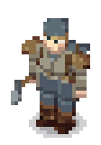
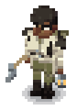
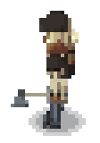
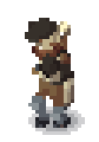

Pit-Digger Foreman
Pit-Digger Foreman is an elite of Under the Sink (level 9).
Pit-Digger Foreman is an elite of Under the Sink (level 9).
In Under the Sink
In Under the Sink the Pit-Digger Foreman is level 9, an elite (a group's fight). It is found in The Silted Streets (proposed name); nothing there comes back until the copy resets. It can drop Chorister's Cowl (1.7 %), Drowned Vestment (1.7 %), Nave-Stone Shield (1.7 %), Niche-Robber's Gloves (1.7 %), Silt-Crusted Hauberk (1.7 %) and Verger's Chain (1.7 %).
Gallery







